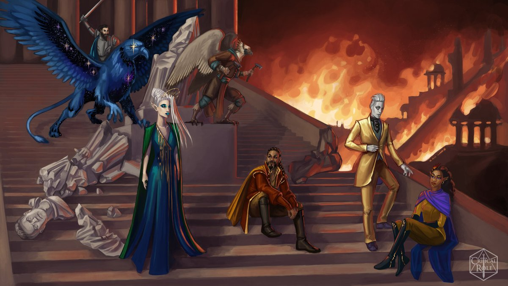
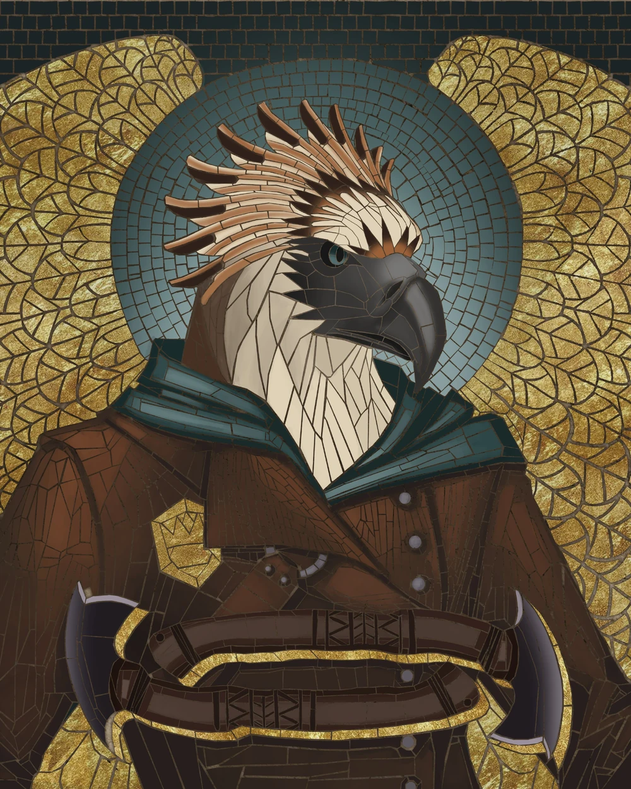
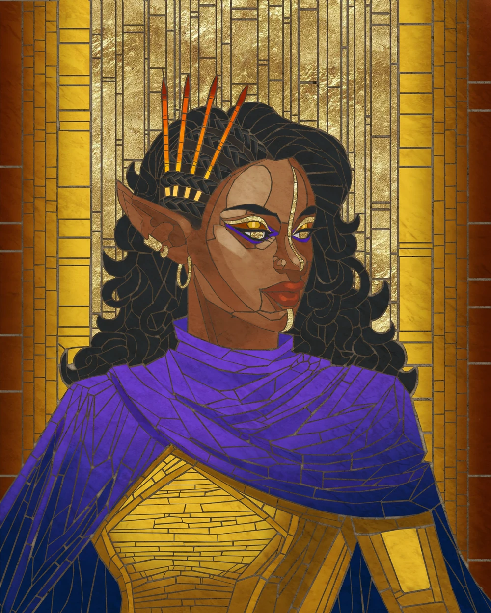
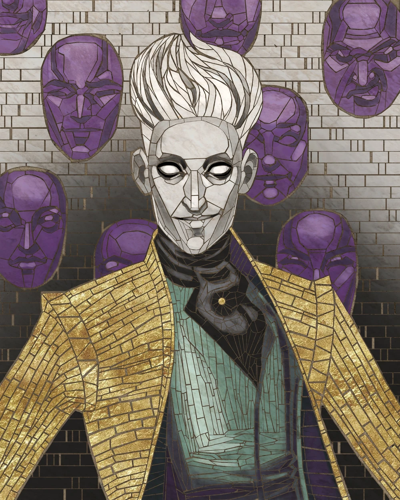
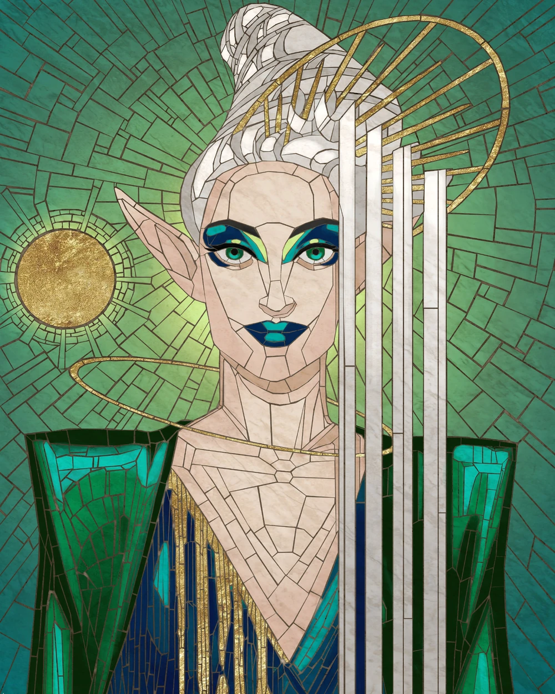
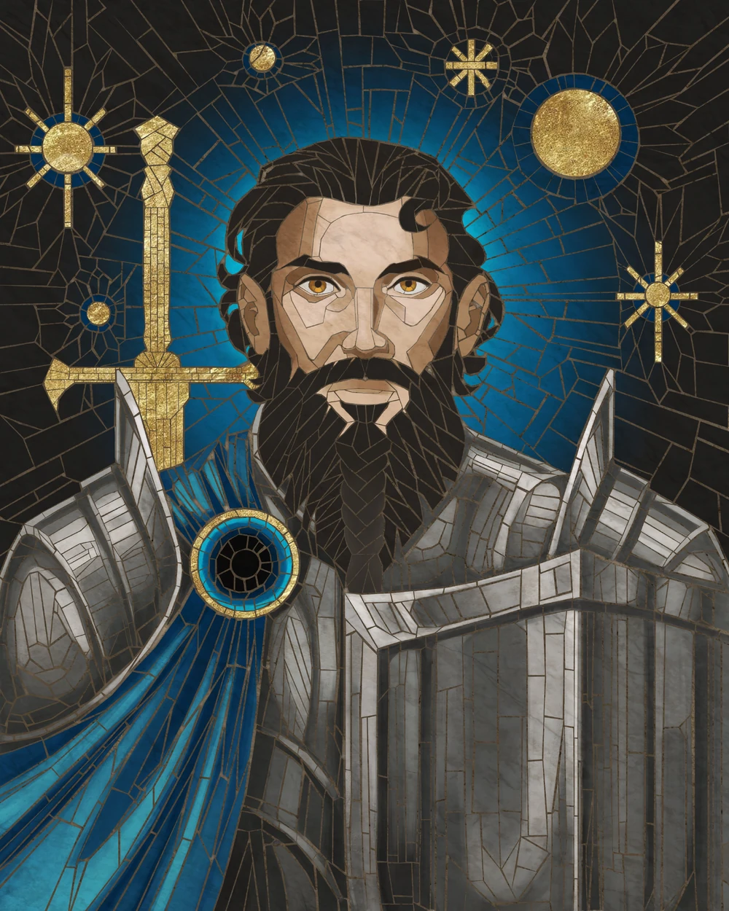

Exandria Unlimited: Calamity
 Art By: @agarthanguide
In a world of magic and intrigue, the fate of Exandria hangs in the balance as the Ring of Brass—a diverse group of individuals bound by intertwined destinies—grapples with treachery, manipulation, and the looming threat of ancient evils. The story begins with the theft of the powerful Orb of Knowledge from the Sorcerer’s University in Avalir, setting off a chain of events that propels the group on a perilous journey to uncover the truth. Comprised of Patia, Nydas, Zerxus, Laerryn, Loquatius, and Cerrit, the Ring soon learns they are caught in a web of deceit spun by Lycretia, a powerful mage with her own hidden agenda. Their investigation reveals a dark plot orchestrated by Cormorant, a sinister figure allied with the Betrayers, aiming to destabilize Exandria.
As the Ring delves deeper, they uncover more sinister forces at play, including the targeting of Purvan Suul, a key figure in Vasselheim, to prevent him from aiding their cause. Tensions rise within the group as Laerryn grapples with the responsibility of wielding the Astral Leywright, and Zerxus faces a moral dilemma after being offered a pact by the Lord of the Hells. Meanwhile, Nydas struggles with the weight of leadership, burdened by the sacrifices it demands. Despite these internal conflicts, the Ring continues their journey to stop the Betrayers and prevent the primordials, Emperor Rau’shaun and Empress Ka’mort, from being unleashed upon Exandria.
The stakes grow higher as Avalir descends into chaos and destruction. The Ring races against time to thwart Cormorant’s machinations, ultimately making sacrifices that test their resolve and challenge their beliefs. In a desperate bid to save their world, the group confronts the forces of darkness with unwavering courage, pushing through their doubts and fears. Though they face overwhelming odds, the Ring of Brass remains united in their mission to protect Exandria, fighting not only for survival but for a chance at hope and redemption.
In the aftermath of the cataclysmic events, Exandria lies shattered but not defeated. The Ring of Brass’s actions have spared the world from annihilation, paving the way for a new era of rebuilding and renewal. Though scars remain from the chaos they endured, the spirit of resilience and hope endures, ensuring that Exandria will rise again, stronger and more united than ever before.
The characters are:
Cerrit Agrupnin 
Cerrit Agrupnin, an eisfuura rogue, holds the esteemed position of Senior Sightwarden within the Eyes of Avalir. Despite his demanding role, Cerrit is a devoted family man, blessed with a loving wife and two children: Maya, his spirited seven-year-old daughter, and Kir, his playful five-year-old son. While his wife, a scientist, often travels for work, Cerrit maintains a close bond with his family, facilitated by a sending stone that Kir uses to communicate with him, sometimes revealing his sister’s mischievous escapades. Despite the demands of his duty, Cerrit cherishes the comfort and joy of his familial relationships.
Laerryn Coramar-Seelie 
Laerryn Coramar-Seelie, an elven wizard, held the esteemed position of Architect Arcane within the city of Avalir. Utilizing the Grand Geometer she had meticulously crafted, Laerryn diligently monitored the approaching apogee solstice. Her calculations hinted at a high likelihood of significant shifts in the ley lines, prompting heightened concern.
Loquatius Seelie 
Loquatius Seelie, a changeling warlock/bard, resides within the vibrant city of Avalir where he serves as a broadcaster in the esteemed Herald’s Tome. Hailing originally from the mystical Feywild and a member of the Seelie Court, Loquatius pledged his allegiance to Lady Elmenore as her devoted warlock. His journey led him to Exandria, where he found love in the arms of a mortal woman, Laerryn Coramar. Despite their affection, their union proved tumultuous, culminating in divorce less than seven years later, prompting Loquatius to depart their shared home in Avalir, leaving behind a trail of unresolved differences.
Nydas
Okiro

Nydas Okiro, a human sorcerer/bard and former pirate, ascended to the prestigious role of Guildmaster of the Golden Scythe in Avalir. Renowned for his cunning and ambition, Nydas not only led the guild but also founded the Sorcerer’s University within the city’s walls. However, beneath his charismatic facade lies a darker truth. Avalir, known for its annual journey across Exandria to gather ether, had fallen prey to corruption. Despite tradition dictating the allocation of ether for the Replenishment, a significant portion was diverted by nefarious means. Nydas played a pivotal role in this scheme, ensuring the Leywright’s manipulation to maintain secrecy and sustain the illicit flow of ether for personal gain, unbeknownst to the citizens of Avalir.
Patia Por’co 
Patia Por’co, an elven wizard known for her role as the Keeper of Scrolls and Archmage of the Librarium Incantatum in Avalir, carried a hidden burden from her past. Despite fondly mentioning her grandfather, Patia remained reticent about her parents, their absence shrouded in mystery. It wasn’t until later that she unraveled the truth: her memories of them had been deliberately erased by her grandfather, Imyr Por’co, who deemed them failures and harbored greater aspirations for Patia. This revelation cast a shadow over her past, illuminating the complexities of her familial ties and the weight of expectations placed upon her shoulders.
Zerxus Ilerez 
Zerxus Ilerez, a human paladin from a town near Cathmoíra, rose to become the revered First Knight of Avalir after marrying Evandrin and raising their son Elias. Tragedy struck when Evandrin became ensnared in another realm, leaving Zerxus burdened with grief and guilt. Despite his efforts to resurrect Evandrin, he faced failure and sought solace in the lore of the Betrayer Gods. As the looming calamity approached, Zerxus resided in the Tower of the First Knight with his loyal griffon, Tempus, while Elias remained distant, dwelling in Cathmoíra under another’s care. Their fractured bond echoed the tumultuous times ahead.
Magister Cormorant’s Demise ~ Episode 2
Encounter:
- Magister Micah Cormorant
# Round 1
add_damage('Laerryn', 'Fire', 41)
# Fireball
add_damage('Laerryn', 'Bludgeoning', 26)
# Stone Construct
increment_kills('Laerryn')
# Micah CormorantBattle in the Streets of Avalir ~ Episode 3
Encounter:
- Lacrytia Hollow
- Milus Phren
- 2 Spellguard Knights
- Xartaza
- 4 Mages
- 4 Skeletons
- 6 K’nauthi Clerics
# Round 1
add_damage('Nydas', 'Slashing', 32)
add_damage('Patia', 'Fire', 136)
# Fireball
increment_kills('Patia')
# Skeleton
increment_kills('Patia')
# Skeleton
increment_kills('Patia')
# Skeleton
increment_kills('Patia')
# Skeleton
add_enemy_damage('Phren', 'Slashing', 18)
update_damage_taken('Nydas', 18)
add_enemy_damage('Spellguard', 'Slashing', 27)
add_enemy_damage('Spellguard', 'Psychic', 28)
update_damage_taken('Cerrit', 16)
update_damage_taken('Zerxus', 39)
add_damage('Cerrit', 'Slashing', 24)
add_damage('Zerxus', 'Radiant', 38)
add_damage('Zerxus', 'Radiant', 38)
# Holy Avenger
add_enemy_damage('Mages', 'Fire', 71)
# Fireball
update_damage_taken('Zerxus', 34)
update_damage_taken('Loq', 34)
update_damage_taken('Laerryn', 3)
add_enemy_damage('Clerics', 'Force', 23)
# Spiritual Weapon
update_damage_taken('Nydas', 11)
# Round 2
# Nydas does a dragon thing
add_damage('Nydas', 'Slashing', 30)
add_enemy_damage('Phren', 'Slashing', 50)
add_damage('Cerrit', 'Slashing', 68)
increment_kills('Cerrit')
# Mage
add_damage('Loq', 'Psychic', 28)
# Psychic Lance
add_damage('Loq', 'Bludgeoning', 40)
add_damage('Zerxus', 'Slashing', 51)
add_damage('Zerxus', 'Radiant', 82)
# Holy Avenger
increment_kills('Zerxus')
# Milus Phren
add_enemy_damage('Erinyes', 'Slashing', 28)
add_damage('Zerxus', 'Slashing', 13)
add_damage('Zerxus', 'Radiant', 11)
# Holy Avenger
add_damage('Laerryn', 'Bludgeoning', 200)
# Reverse Gravity
increment_kills('Laerryn')
# K'nauthi Cleric
increment_kills('Laerryn')
# K'nauthi Cleric
increment_kills('Laerryn')
# K'nauthi Cleric
increment_kills('Laerryn')
# K'nauthi Cleric
increment_kills('Laerryn')
# K'nauthi Cleric
# Round 3
add_damage('Cerrit', 'Piercing', 9)
increment_kills('Cerrit')
# Spellguard Knight
increment_kills('Patia')
# Lacrytia Hollow
increment_kills('Nydas')
# Mage
increment_kills('Nydas')
# MageThe Ring of Brass vs. Vespin Chloras ~ Episode 4
Encounter:
- Vespin Chloras
- 4 Taxmen
# Round 1
add_damage('Cerrit', 'Piercing', 17)
add_enemy_damage('Vespin', 'Fire', 10)
# Fire Bolt
update_damage_taken('Cerrit', 10)
add_damage('Nydas', 'Cold', 175)
# Cone of Cold
add_enemy_damage('Taxmen', 'Slashing', 23)
add_damage('Loq', 'Psychic', 14)
# Psychic Lance
add_enemy_damage('Vespin', 'Fire', 19)
# Fire Bolt
update_damage_taken('Patia', 19)
# Round 2
add_damage('Cerrit', 'Slashing', 34)
add_enemy_damage('Vespin', 'Fire', 42)
#
add_enemy_damage('Taxmen', 'Slashing', 20)
update_damage_taken('Nydas', 20)
add_damage('Nydas', 'Slashing', 9)
add_enemy_damage('Taxmen', 'Slashing', 82)
add_enemy_damage('Taxmen', 'Psychic', 25)
update_damage_taken('Zerxus', 107)
update_times_knocked_unconscious('Zerxus')
# Knocked unconscious by the Taxman
# Round 3
add_damage('Cerrit', 'Slashing', 109)
increment_kills('Cerrit')
# Vespin Chloras
add_damage('Nydas', 'Slashing', 8)
add_damage('Cerrit', '', 8)
add_enemy_damage('Taxmen', 'Slashing', 53)
update_damage_taken('Nydas', 23)
update_damage_taken('Cerrit', 30)
# Zerxus autofails two death saves from Nydas' strike
update_times_knocked_unconscious('Nydas')
# Nydas is knocked unconscious by a Taxman
add_enemy_damage('Taxmen', 'Psychic', 39)
# Dispelling Blast
update_damage_taken('Patia', 39)
update_times_knocked_unconscious('Patia')
# Knocked unconscious by the Taxman's Dispelling Blast
update_damage_taken('Laerryn', 40)
update_healing('Loq', 10)
# Healing Word on LaerrynOut of Combat Actions
# Cerrit finds an invisible figure
add_damage('Cerrit', 'Slashing', 37)
increment_kills('Cerrit')
# Invisible Figure
# Destruction of the Tree of Names
update_damage_taken('Patia', 153)
update_damage_taken('Loq', 150)
update_damage_taken('Nydas', 169)
update_damage_taken('Laerryn', 172)
update_damage_taken('Zerxus', 140)
update_times_knocked_unconscious('Patia')
# She is knocked out from the fire of the Tree of Names
update_times_killed('Patia')
# She is subsequently killed outright from the explosion of the Tree of Names
update_times_knocked_unconscious('Nydas')
# He was knocked unconscious by the explosion of the Tree of Names
update_times_knocked_unconscious('Loq')
# He was knocked unconscious by the explosion of the Tree of Names
update_times_knocked_unconscious('Zerxus')
# He was knocked unconscious by the explosion of the Tree of Names
# Nydas auto fails a death save from the debris
# Loquatius auto fails a death save from the debris
# Zerxus auto fails a death save from the debris
# Zerxus speaks with the Lord of Hells, Asmodeus
update_times_killed('Zerxus')
# Asmodeus kills him by pulling off Zerxus' skin
update_times_killed('Zerxus')
# Asmodeus continues his slaughter on Zerxus
update_times_killed('Zerxus')
# Asmodeus snaps Zerxus' neck
# Back to the Time Stop
# Loquatius fails a death save
update_times_killed('Loq')
# Loquatius is subsequently killed
# The party is saved... for now
update_healing('Zerxus', 1)
# Uses Revivify on Loquatius bringing him back to life
update_healing('Zerxus', 5)
# Lay on Hands on Nydas, brining him back to consciousness
update_healing('Zerxus', 1)
# Uses Revivify on Patia bringing him back to life
update_healing('Loq', 15)
# Cure Wounds on Nydas
# Loquatius heals Laerryn
update_healing('Loq', 9)
# Cure Wounds on Laerryn
# Nydas versus Badran
add_enemy_damage('Badran', 'Slashing', 24)
update_damage_taken('Nydas', 24)
add_damage('Nydas', 'Slashing', 45)
# The Fall of the Ring of Brass
update_times_killed('Patia')
# Patia is consumed by lava during the collision
update_times_killed('Nydas')
# Nydas is consumed by the lava during the collision
update_times_killed('Laerryn')
# Laerynn is killed in an explosion during the collision
update_times_killed('Loq')
# Loquatius is killed in an explosion during the collisionThe Fall of Avalir: Sacrifice, Legacy, and the Last Flight
 Art By: @kingcael
Art By: @kingcael
In his final moments, Nydas received a Sending from his brother Eaedalus, asking if he had made it out. With quiet reassurance, Nydas assured him all would be well. As the former pirate succumbed, he saw a vision of his younger self and his brother on the deck of a ship, comforted by the knowledge that his family and the surviving children of the University would have a future filled with possibility.
Patia fell when a Dispelling Blast tore through her Wall of Force, but with her last breath, she unleashed the boon of magical ether from the Tree into the Leywright, further amplifying the city’s energy. In the moments before the final explosion, she thought of her grandfather, Imyr, and found solace in the idea that countless dreams were still possible beyond the end.
As the hellfire consumed him, Zerxus caught a final glimpse of Tempus reuniting with Elias and leading him through a portal to Evandrin. Seeing them together at last, and hearing his husband’s voice promising to bring him home, Zerxus embraced his fate, believing that even if Asmodeus twisted him into something terrible, redemption was still within reach.
The Astral Leywright activated, hurtling the Emperor of Fire and the Empress of Earth through the Planes of Existence, destroying both titans but also annihilating the continent of Domunas in the process. Of the Ring of Brass, only Loquatius, Laerryn, and Cerrit remained. Loquatius and Laerryn held onto each other in their final moments, exchanging words of love, while Cerrit, with their help, made one last desperate bid to escape to his family. Following Laerryn’s instructions and using Loquatius’ magical talisman, he managed to flee in time.
Cerrit, having escaped Avalir, used the telepathic bond one last time to comfort Laerryn, assuring her that she had given them all a chance and relieving her guilt from their earlier disagreement. He spent weeks flying over the ocean before reuniting with Wrayne, Maya—who now held Avalir’s vast collected knowledge in the orb Patia had sent to her—and Kir, ready to face the Calamity together.
Total Damage Stats


Total Combat Performance Stats


* Note, the damage totals are not 100% accurate, this could be from players not saying what damage type the attack did or separating damage types (such as Hex damage)
* The character artwork was made by: @agarthanguide